INDEPENDENTLY VERIFIABLE RESEARCH SOFTWARE
Project overview
Reading verified release evidence…
POPULATION-DERIVED LCA
Coronary4D
Population-Derived Disease-Aware 4D LCA Generator
Time-corresponded LMCA-LAD-LCX anatomy with controlled disease, cardiac deformation, cyclic radii, and verified scientific export.
ENGINEERING RELEASE
—
—
CLINICAL VALIDATION
NOT CLAIMED
NOT CLAIMED
REAL DATA
— labels→centerlines
assignment→2 planes
2 ellipses→cardiac frame
surface coordinates→27 points
81-D PCA→B-spline
LCA tree→disease
motion + radius→XYZ-radius
VTK + arrays→VALIDATION
— labels→centerlines
assignment→2 planes
2 ellipses→cardiac frame
surface coordinates→27 points
81-D PCA→B-spline
LCA tree→disease
motion + radius→XYZ-radius
VTK + arrays→VALIDATION
What it is
A reproducible research generator for the major-vessel left coronary artery: LMCA bifurcating into LAD and LCX.
Why we need it
Controlled synthetic populations allow anatomy, disease, and motion to be varied independently while preserving a documented output contract.
How it works
Measured geometry creates a confidence-gated statistical model; learned anatomy is sampled and then parametric radii, disease, motion, and pulsatility are added.
What I should say
“Coronary4D is a population-derived major-vessel LCA generator. It learns coordinated LMCA-LAD-LCX shape variation from a strictly eligible cohort, then adds controlled disease and cardiac motion. This is a validated engineering system, not a clinically validated patient predictor.”
MEASURED
Confidence before cohort size
Every number below is loaded from the final audit.
—source NIfTI labels
→—extracted LCA
→—resolved LAD/LCX
→—anatomy pass
→—PCA eligible

Exclusion reasons
| Exclusive final reason | Cases |
|---|
We did not use all 200 simply to maximize N. Uncertain branch identities and unsuitable anatomical representations were excluded before PCA.
What / why
The cohort funnel separates discovered labels from cases safe for population statistics. Strict gates reduce contamination.
How implemented
Extraction, daughter-assignment confidence, source/scaffold anatomy, ellipsoid quality, integrity, and fixed-representation checks are audited independently.
Numerical proof
—
What I should say
“We started with 200 CT label volumes. 191 produced usable protected LCA records. LAD and LCX identity was confidently resolved in 181. After anatomical and representation checks, 52 cases formed the statistical cohort. Synthetic samples do not increase this independent patient count.”
MEASURED
Real centerlines → two SVD planes → two actual ellipses
The ellipse is reference geometry. The real artery is not replaced or bent to match it.
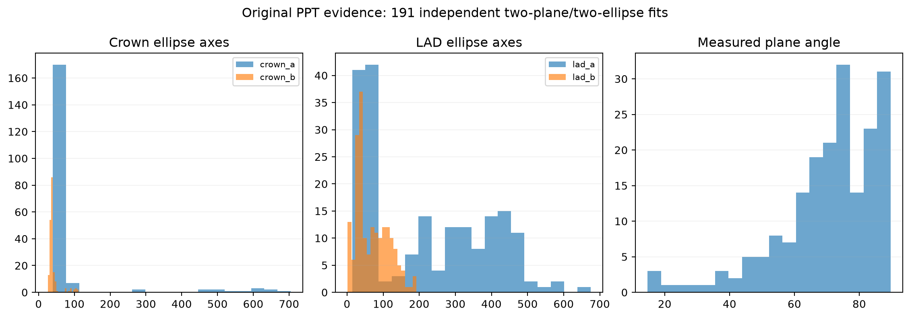
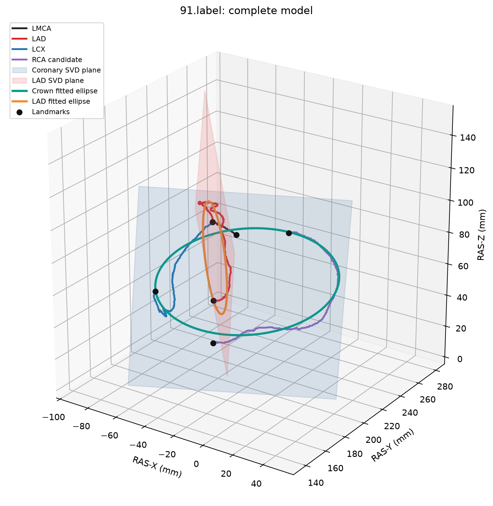
SVD plane
Answers: “What is the best 3-D plane for these points?”
Ellipse inside plane
Answers: “What are the semi-axes a, b, tilt, angular extent, and residuals?”
Pointwise evidence
Landmark theta and residual connectors quantify where each measured artery lies relative to its reference ellipse.
Real artery ≠ ellipse. The crown/coronary plane and LAD/interventricular plane establish an anatomical scaffold while protected source coordinates remain unchanged.
What I should say
“SVD finds the best-fitting 3D anatomical plane. Ellipse fitting then measures size, tilt, angular course, and residuals within that plane. The ellipse is a compact scaffold, not a replacement centerline: the maximum source coordinate and segment-length change are both zero.”
LEARNED
Joint 27-point statistical representation
LMCA5
+LAD12
+LCX10
=anatomical points27
× XYZ =shape vector81-D
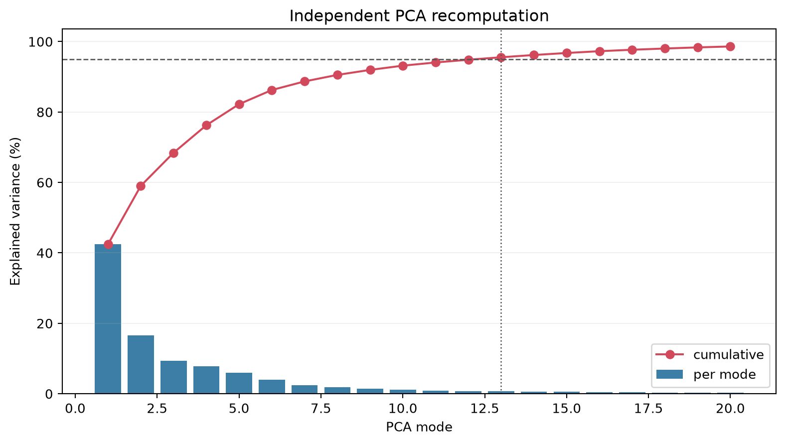
What PCA does
PCA compresses coordinated anatomical variation. Whole branch patterns vary together instead of moving individual points independently.
Scope boundary
The learned distribution represents only the 52 eligible major-vessel LCA anatomies. It is not claimed to represent all coronary patients.
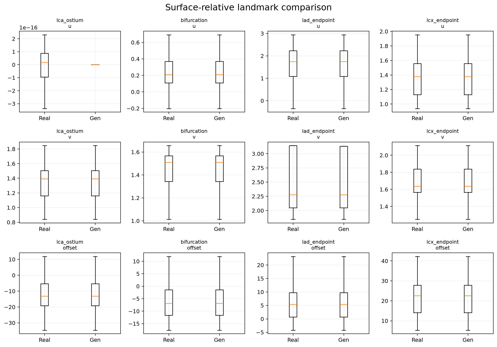
What I should say
“Every eligible LCA tree is converted to the same 27 corresponding anatomical points. Each point has X, Y and Z, so every patient becomes an 81-value vector. PCA learns how these values vary together. Thirteen modes retain approximately 95.55 percent of variation in the eligible cohort.”
GENERATED
Sample, smooth, join, validate
matched statistical
anatomy→PCA
innovation→LMCA/LAD/LCX
control samples→composite cubic
B-spline→exact shared
bifurcation→anatomy
gates
anatomy→PCA
innovation→LMCA/LAD/LCX
control samples→composite cubic
B-spline→exact shared
bifurcation→anatomy
gates

Real B-spline evidence
LMCA[-1] = LAD[0] = LCX[0]The accepted centerline uses explicit cubic B-spline basis evaluation, exact terminals, and exact daughter joins. Unconstrained global cubic trials were rejected when they produced hooks or invalid turns.
—maximum numerical difference from the previously accepted stable path
Safe live generation
Runtime output is created only under
presentation_center/runtime_demo/.What I should say
“Generation starts from a matched eligible baseline and a conservative joint PCA innovation. A genuine composite cubic B-spline produces continuous branches while preserving endpoints. Every candidate must pass topology, course, turn, range, collision, and scaffold gates.”
PARAMETRIC
Controlled radius-only disease

Healthy
Reference taper and pulsatility without stenosis.
Focal LAD
Localized smooth radius reduction.
Diffuse LCX
Longer stenotic region with smooth transitions.
Tandem LAD
Multiple separated focal lesions.

MAX HEALTHY-vs-DISEASE XYZ DIFFERENCE 0.0 mm
Why
Separating geometry from radius lets anatomy and disease severity be controlled independently.
How
Smooth focal, diffuse, or tandem profiles scale radius while leaving all XYZ centerline points unchanged.
Boundary
This is a simplified axisymmetric stenosis model, not plaque composition or hemodynamics.
What I should say
“All four release cases use identical anatomy. Only the radius field changes. Focal is localized, diffuse is longer with smooth transitions, and tandem uses separated focal lesions. The maximum healthy-versus-disease XYZ difference is exactly zero.”
PARAMETRIC
Non-rigid 4D cardiac motion with correspondence
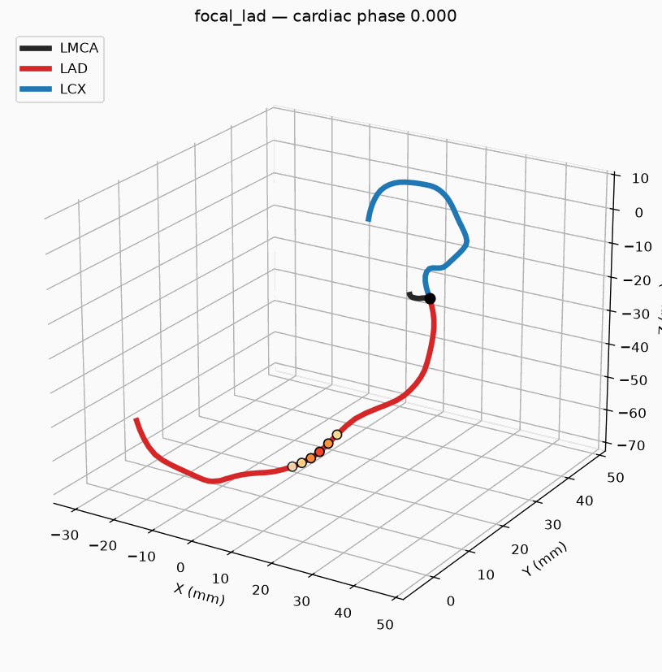
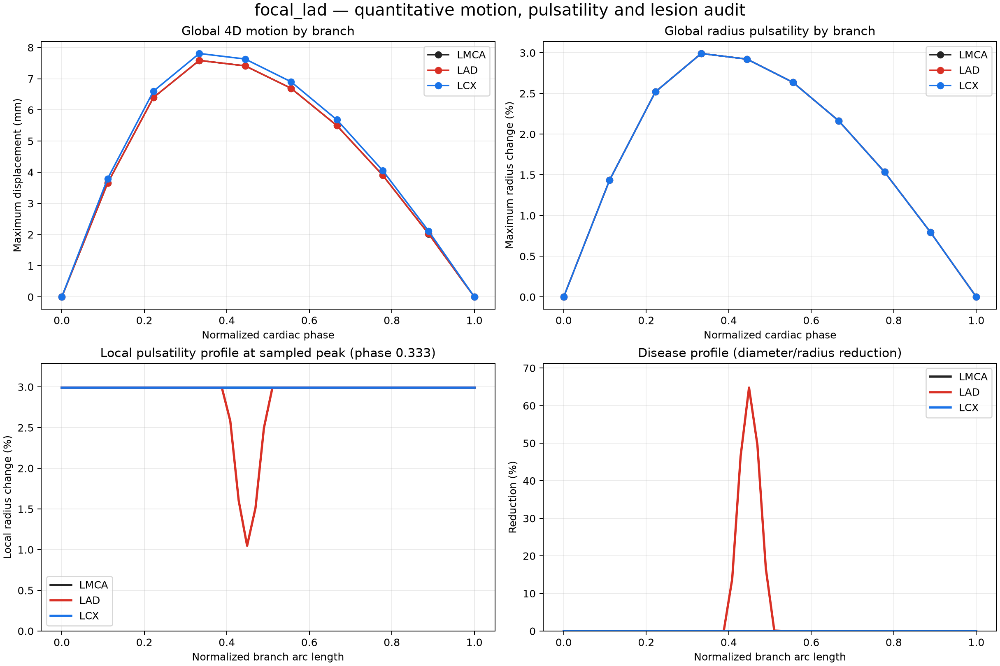
radial contraction+longitudinal shortening+base-to-apex torsion
Interactive phase scrubber
LMCALADLCX
Phase 0 / 9
What I should say
“We do not move artery points randomly. Geometry is represented relative to a deforming support surface. Radial contraction, longitudinal shortening, and torsion produce non-rigid motion while every phase retains the same point ordering and exact bifurcation.”
PARAMETRIC
Cyclic lumen radius and reduced lesion compliance
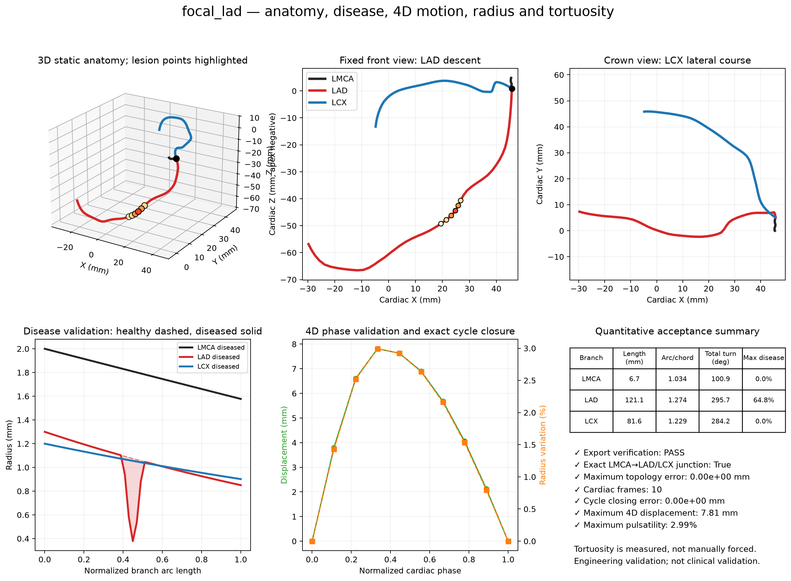
—healthy global radius change
—focal LAD lesion
—diffuse LCX lesion
—tandem LAD lesion
PARAMETRIC COMPLIANCE MODEL NOT FSI
What
Healthy radius changes cyclically. Stenotic regions are assigned a lower cyclic response.
Why
The visual and tensor output must distinguish global vessel pulsatility from local lesion compliance.
Proof
Final release audits calculate local radius-change fractions and lesion-to-healthy ratios directly from the 4D arrays.
What I should say
“Healthy epicardial radius changes by about three percent in the demonstration. Lesion regions respond less, around 35 to 39 percent of the healthy amplitude. This is a scalar parametric compliance model, not fluid-structure interaction.”
GENERATED OUTPUT
Tree(t) = (x(t), y(t), z(t), r(t))
[
phase10
branch3
point50
coordinate4
]
Coordinate order: [x_mm, y_mm, z_mm, radius_mm] · Branch order: [LMCA, LAD, LCX]
Actual focal-LAD shapes
Loading…
Temporal contract
Every phase contains corresponding points in the same order. Phase zero is the fixed static reference within numerical export tolerance, and phase one repeats closure.
File guide
What I should say
“The main tensor is indexed by phase, branch, point, and coordinate. Each coordinate stores X, Y, Z, and radius in millimetres. That means the complete output is not only moving geometry; it is a time-varying XYZ-radius coronary tree.”
GENERATED OUTPUT
ParaView-ready time series
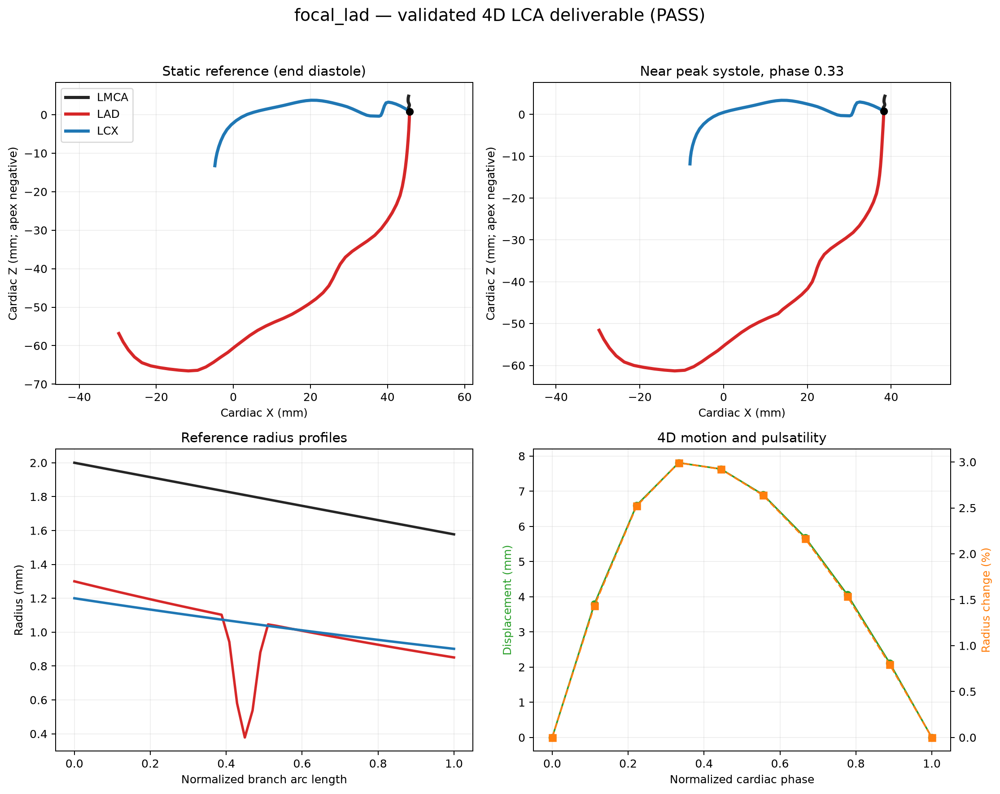
cine.pvd↓VTM per phase↓LMCA / LAD / LCX VTP blocks
- Open
cine.pvdin ParaView. - Click Apply.
- Use Tube representation if desired.
- Color by
radius_mm. - Press Play.
- Color by
disease_reduction_fractionto reveal stenosis.
VTK READBACK —
Loading path…
What I should say
“The PVD file is the single ParaView entry point. It references one VTM multiblock tree per phase, and each VTM contains LMCA, LAD, and LCX VTP blocks with radius and disease arrays. Readback was independently verified.”
QUANTITATIVE EVIDENCE
Engineering acceptance dashboard
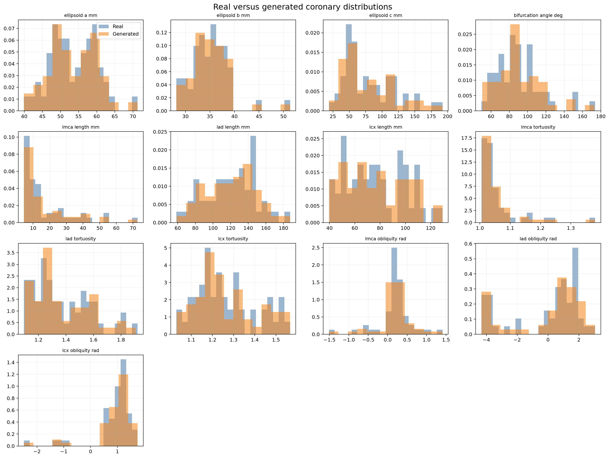
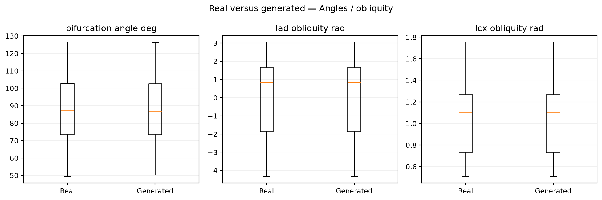
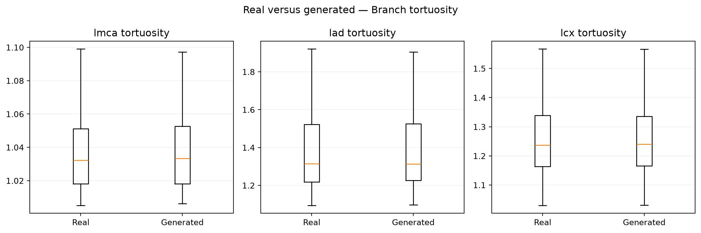
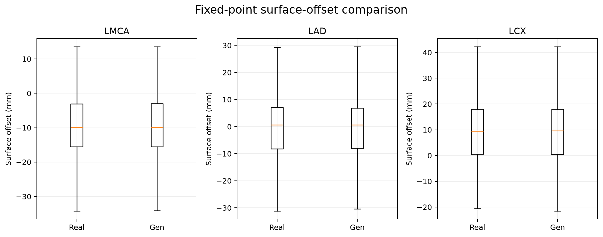
Matching distributions means the generated population reproduces important characteristics of the eligible cohort under the audited comparisons. It does not establish clinical validity.
What I should say
“All 52 requested canonical trees were accepted after 64 candidate attempts. Fifty real-versus-generated comparisons passed with zero warnings. We compare lengths, angles, tortuosity, scaffold parameters, landmarks, and PCA scores—not only visual appearance.”
GENERATED
Not copies—and not external validation


78.85% IS AN ANATOMICAL GENERATION ACCEPTANCE RATE NOT CLASSIFICATION ACCURACY
Novelty proof
Nearest-training distance, baseline-to-generated RMS, PCA displacement, and multiple variants quantify non-identity.
Holdout design
Five source-grouped folds block both held-out source and its baseline from model access.
Boundary
This is internal representation stability. It is not an external institution cohort.
What I should say
“No canonical output is an exact or sub-0.1-millimetre training duplicate. The source-grouped holdout accepted 41 of 52 first draws with zero source or baseline leakage. That 78.85 percent is anatomical generation acceptance, not classification accuracy.”
REPRODUCIBLE QA
Read-only verification on demand
same seed + same configuration
→same outputdifferent seed
→different valid sampleVerification is read-only. Failures are reported and never silently repaired.
Hash details
Open submission_release/RELEASE_MANIFEST.json and final_audit/protected_integrity_comparison.json. The main screen deliberately avoids dumping long hash lists.
What I should say
“The release can verify itself. The fast mode parses manifests, checks frozen statistics hashes, verifies demo checksums, topology, phase-zero identity, PVD availability, and metric consistency. Full mode adds source, model, disease, motion, VTK, novelty, holdout, and regression checks without repairing evidence.”
NOT CLINICALLY VALIDATED
Scientific scope and limitations
FINAL POPULATION-DERIVED RELEASEMajor-vessel LCA only
LMCA → LAD + LCXNo population-derived RCAAvailable components were not trusted annotated RCA ground truth.
No side branchesNo diagonal, septal, obtuse marginal, or trusted small-vessel topology.
52 effective anatomiesStrict eligibility creates selection bias; synthetic derivatives do not raise independent N.
Internal holdout onlyNo external institution cohort or reader study.
Linear PCAMay not capture nonlinear or multimodal anatomical variation.
Parametric physiologyRadius, taper, disease, motion, pulsatility, and compliance are engineering models.
Simplified stenosisAxisymmetric lumen narrowing, not plaque or vessel-wall morphology.
No hemodynamics or myocardiumNo CFD, FSI, perfusion, wall mechanics, or clinical prediction.
The original charter included RCA. Scientific review found that available RCA candidates could not be treated as reliable annotated ground truth, so the validated population claim was deliberately restricted to LMCA-LAD-LCX.
What I should say
“Excluding RCA is not hiding a failed feature. It prevents unsupported data from becoming a population claim. The release is intentionally limited to major-vessel LCA, has 52 effective source anatomies, uses linear PCA and parametric physiology, and has no external or clinical validation.”
Presenter mode
Projector-friendly shortcuts to the complete story.
Presentation material
Offline fallback
If the app cannot start, open offline/index.html. It includes the key results, figures, animation, scripts, and ParaView instructions.
Possible questions
The viva guide contains more than 40 short evidence-based answers covering cohort selection, SVD, PCA, B-splines, disease, motion, output, validation, RCA, and limitations.
What I should say
“This final screen is my presentation controller. Every earlier result is linked to verified evidence. I can generate a fresh case into an isolated runtime folder, scrub a cardiac cycle, open the VTK workflow, or run release verification without altering the frozen population model.”